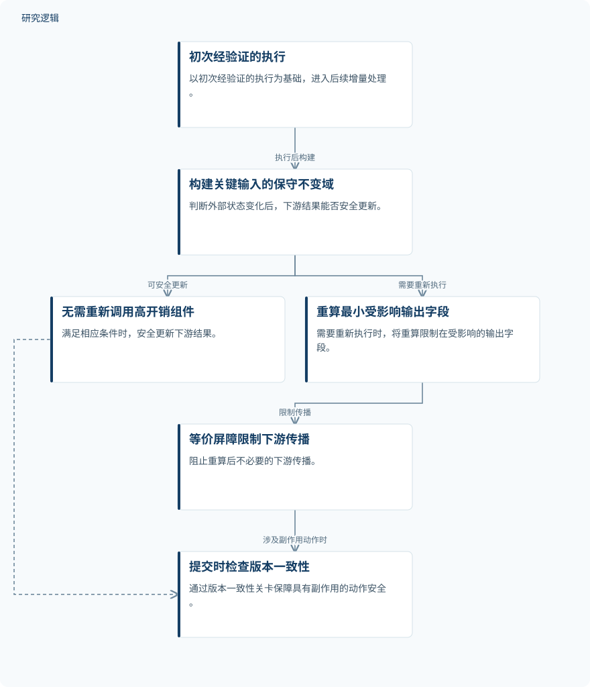

摘要解读
面向自主智能系统的增量一致性执行
Incremental Consistency Execution for Autonomous Intelligent Systems
解读更新 2026-10-17 10:27 · 依据公开摘要整理，未核验全文细节
自主智能系统运行过程中，外部状态不断变化，是否每次都要重跑整条工作流？这项研究尝试在保持结果一致性的同时，只更新真正受影响的部分，为理解长流程智能体的计算开销与安全复用提供了一个切入点。
文章目录
外部状态变了，整条流程都要重跑吗？
长时程自主智能系统通常同时依赖大语言模型、数据库、外部 API 和规则引擎。这些异构组件所依赖的外部状态会在执行期间持续变化。如果每次变化都触发完整工作流重执行，就会产生大量冗余计算。
因此，问题不只是如何减少调用，还包括如何判断已有结果是否仍然适用。本文讨论的增量一致性执行，正是围绕状态变化之后的结果复用、局部重算与一致性保障展开。
先判断结果是否仍适用，再缩小重算范围
摘要提出的方法以任务事实契约、字段级依赖掩码和状态扰动结果不变域为基础。在完成初次经验证的执行后，系统为关键输入构建保守的不变域，据此判断能否不再调用高开销组件，安全地更新下游结果。
当确实需要重新执行时，系统只重算受影响的最小输出字段，并通过等价屏障阻止不必要的变化继续向下游传播。此外，提交时的版本一致性关卡用于保障具有副作用的动作安全。摘要没有展开这些机制的具体构建算法与判定规则。
依据摘要整理的增量一致性执行示意


仅概括摘要明确陈述的判断、局部重算与提交检查关系，不代表论文原图，也不补充未报告的实现细节。
下载 SVG图示关系说明
实线表示相邻阶段的信息流，虚线表示跨阶段联系或反馈。
初次经验证的执行 → 构建关键输入的保守不变域：执行后构建；构建关键输入的保守不变域 → 无需重新调用高开销组件：可安全更新；构建关键输入的保守不变域 → 重算最小受影响输出字段：需要重新执行；重算最小受影响输出字段 → 等价屏障限制下游传播：限制传播；无需重新调用高开销组件 → 提交时检查版本一致性：涉及副作用动作时；等价屏障限制下游传播 → 提交时检查版本一致性：涉及副作用动作时
摘要报告：调用与延迟下降，同时维持一致性
作者在工业故障诊断、企业分析和基于大语言模型的多工具助手场景中进行了实验。摘要报告，该方法显著减少了高开销组件调用和端到端延迟，同时保持较高一致性与较低的错误复用率。
这里需要把效率与复用正确性放在一起阅读：摘要报告的不只是少调用组件，也包括错误复用受到控制。但当前资料没有给出具体降幅、一致性数值或错误复用率，不能据此量化收益大小。
实验覆盖与安全边界仍需进一步核对
本解读仅依据所提供的完整摘要。摘要未报告样本规模、数据来源、对比基线、重复实验与统计检验细节，因此无法判断所述改善在不同任务和状态变化条件下的稳定性，也无法确定其相对哪些方案取得优势。
摘要也未展开不变域的保守性如何建立、错误复用如何定义，以及版本一致性关卡覆盖哪些副作用风险。这些属于当前材料无法判断的验证边界，不意味着论文没有进行相关分析。
阅读启发：关注故障诊断中的复用依据
阅读启发：对于智能运维，值得进一步阅读的是，工业故障诊断中的哪些状态变化允许沿用已有结果，哪些变化必须触发重算。可重点核对任务事实契约、字段依赖与不变域如何共同支撑这一判断，而不宜仅凭摘要就认定该方法适用于所有诊断流程或实际运维处置。
以上为本站阅读启发与建议，不是论文已验证的结论。